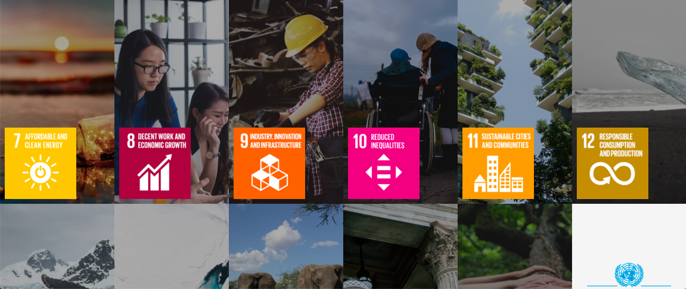
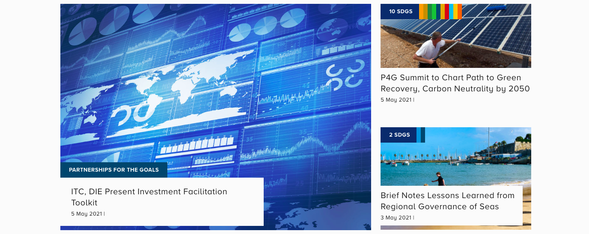
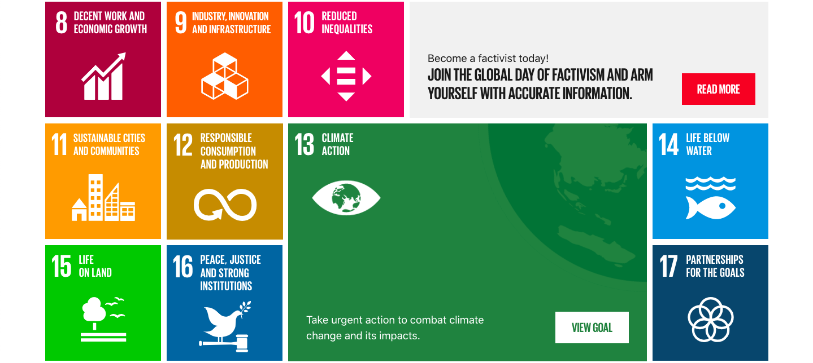
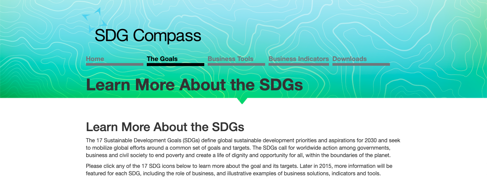

| United Nations The United Nations (UN) website is a great primary resource for learning about SDGs 9 and 11. The site doesn't have lengthy explanations, but contains all the targets, indicators, and data of the goals, along with infographics and other figures to aid in comprehending them. The UN site also has a news feature, where articles about the SDGs are shown, but the site acts best for understanding the principle aims and statuses of SDGs 9 and 11. |
 |
|  | International Institute for Sustainable Development The International Institute for Sustainable Development (IISD) doesn't have any explainations of the SDGs, but it does have a great database of articles related to the goals. Reading from a series of different sources is a great way to learn about the SDGs and view different perspectives of them. |
| The Global Goals The Global Goals is an informative site on the news pertaining to the SDGs. The Global Goals doesn't have the longest explainations about each of the goals, but it does have several news articles and events that involve the SDGs; it's a great site for keeping up with the progress of the goals. |
 |
|  | SDG Compass SDG Compass is a great tool for understanding the specific targets of the SDGs, as well as their economic aspects. The site contains explainations of each of the goals, but more impressively it connects each of the goals and their targets to aspects of buissness, which is great for learning about the implimentation of the SDGs. |
| SDGs 9 and 11 Quiz |
| Press start to begin! |
|
|